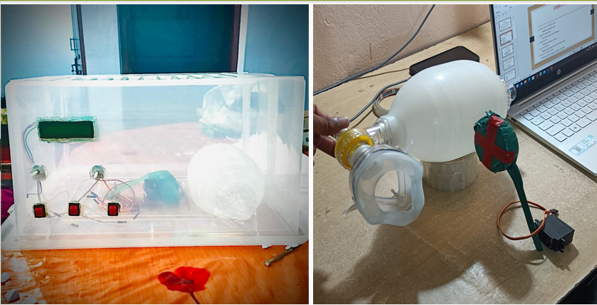

The basic function of the ventilator is providing ventilation according to the disease type.The ventilator works in mainly three modes: Covid,Pneumonia and manual. Includes health monitoring system giving information such as BPM and Blood oxygen reading. Ventilation can be given manually and the rates can be adjusted according to the patient's condition. An IOT server is developed in order to digitally view information of the patient so they can be monitored online
